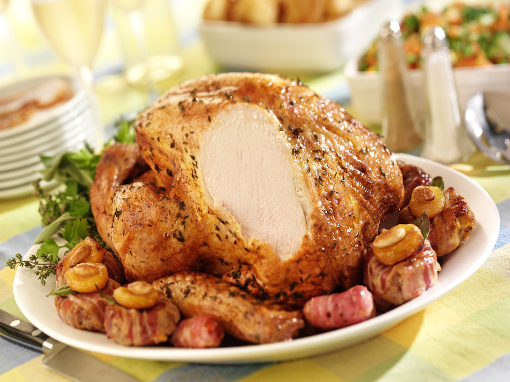

-
-

900Calories
-
Roasting a whole turkey is easier than you think. Just follow these simple instructions for a fresh or thawed turkey:
Preheat oven to 325° F. Drain juices and pat dry with clean paper towels.
Place turkey breast side up on a flat rack in a shallow roasting pan 2 to 2½ inches deep.
Turn the wings back to hold the neck skin in place. (Tucking the wings will help stabilize the turkey in the pan and when carving) Brush or spray skin lightly with vegetable or cooking oil for best appearance.
Insert an oven-safe meat thermometer deep into the lower part of the thigh without touching the bone. When the thigh is up to temperature, and if the turkey is stuffed, move the thermometer to the center of the stuffing.
Place your turkey in the oven.
When the turkey is about ⅔ done, loosely cover breast and top of drumsticks with a piece of foil to prevent overcooking.
Your turkey is done when the temperature with a meat thermometer is 180° F in thigh and 165° F in breast or stuffing.
Lift turkey onto platter, and let stand for 15 minutes before carving.